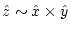
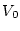
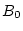
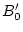
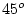

This program helps to setup spin-orbit calculations in magnetic systems. Since SO may break symmetry in certain spacegroups, it classifies your symmetry operations into operations A, which do not invert the magnetization (identity, inversion, rotations with the rotation axis parallel to magnetization), B, which invert it (mirror planes) and C, which change the magnetization in some other way. (Note: magnetization is a result of a circular current, or equivalently, an axial vector resulting from a vector product ). symmetso will keep all A-type and throw away all C-type symmetry operations. Depending on the presence of inversion symmetry it will keep (inversion is present) or remove the B-type operations. Finally, symmetso uses the remaining symmetry operations to check/generate equivalent atomic positions (it can happen that some equivalent atoms become non-equivalent after inclusion of SO interaction).
In essence, it reads your case.struct and case.inso (for the direction of magnetization) files and creates an ordered case.struct_orb file with proper symmetry and equivalent atoms. It also generates a file case.ksym, which is a struct file with valid operations to generate a proper k-mesh using ''x kgen -so''. In addition proper input files case.in1, case.in2, case.inc, case.vspup/dn, case.vnsup/dn, case.clmsum, case.clmup/dn are generated, so that you can continue with runsp -so without any further changes.
symmetso symmetso.def or x symmetso [-c]Usually it is called from the script initso_lapw and thus needs not to be invoked manually.
This program was contributed by:
This program creates an approximate hessian matrix (in .minpair) for structure minimization using the PORT option. It uses a harmonic model with exponentially decaying bond strenght and in many cases reduces the number of geometry steps during min_lapw significantly. It is described in detail in Rondinelli et al. 2006.
For its usage see the comments in sect. 5.3.2.
Please note, R (rhombohedral) lattices are not supported yet.
pairhess pairhess.def or x pairhess
The following parameters are used in param.inc:
| NATMAX | max. number of atoms) |
| NEIGMAX | max number of neighbours |
pairhess uses an optional input file case.inpair, which is needed only for an experienced user for better tailoring of certain default parameters (when the "condition number" is larger than 3, or "max. eigenvalue" .gt. 3).
An example is given below:
---------------- top of file: case.inpair ----------------------- 10.0 2.0 0.25 (Rmax, Decay, ReScale) 0.05 1.0 0 (Cutoff, Diag, mode)
Interpretive comments on this file are as follows:
| RMAX | Maximum distance (a.u.) for considering neighbors. 8-12 is good. |
| DECAY | Exponential decay applied to neighbors when calculating the pairwise bond strenghts. 1.5-2.5 is reasonable. |
| RESCALE | A scaling term to multiply the pairwise hessian by. This number is rather important; 0.25 appears to be best, 0.35 is more conservative |
| CUTOFF | When the weighting (via an exponential decay) becomes smaller than this number the pairwise bonds are ignored. |
| DIAG | The value to multiply a unitary matrix by, this is added to the hessian estimate |
| MODE | 0: Harmonic model; [1: spring model; not working] |
This program creates the inputfile case.inclmcopy_st for the program clmcopy, which copies spin-up densities of atom i to spin-down densities of the related antiferromagnetic atom j and vice versa in an anti-ferromagnetic system. It uses a symmetry operation to find out how and which atomic densities must be interchanged and how the Fourier coefficients of the density transform. It is based on the ideas of Manuel Perez-Mato (Bilbao, Spain).
See $WIENROOT/SRC_afminput/afminput_test for several examples.
The best way is to supply a file case.struct_supergroup, which is the struct file of the nonmagnetic supergroup. If the two spacegroups are ``TRANSLATIONENGLEICH'', it will find out automatically the proper symmetry operation. Please note, this automatic way works only when the coordinate system remains identical. In some cases sgroup may interchange eg. the y and z axis. In such cases reverse this change, both, for the lattice parameters as well as for all positions, set NSYM=0 and run init_lapw again (ignoring any suggestion of sgroup).
If the two spacegroups are ``KLASSENGLEICH'' (i.e. have the same number of symmetry operations), you will be asked to supply a translation which transforms the AF atoms into each other. A typical example would be bcc Cr: the bcc supergroup and the AF subgroup (simple cubic) have both 48 symmetry operations and the proper translation is (0.5,0.5,0.5).
Finally, if you don't give case.struct_supergroup, you have to supply
a symmetry operation (rotation + non-primitive translation) as input. For bcc
Cr or the famous NiO-AFII structure this would be simply
Please see the comments in sect. 4.5.4 on how to proceed in detail for AFM calculations and find further examples in SRC_afminput.
afminput afminput.def or x afminput
The following parameters are used:
| NCOM | number of LM components in the density (in param.inc) |
| LMAX | max l for LM expansion of the density (in param.inc). |
Please see the comments in sect. 4.5.4 on how to proceed in detail for AFM calculations.
clmcopy clmcopy.def or x clmcopy
The following parameters are used in param.inc:
| NCOM | number of LM components in the density |
| NRAD | number of radial mesh points |
| NSYM | number of symmetryoperations |
An example is given below:
---------------- top of file: case.inclmcopy ----------------------- 2 NUMBER of ATOMS to CHANGE 1 2 INTERCHANGE these ATOMS -1.00000000000 0.00000000000 0.00000000000 SYMMETRY OPERATION 0.00000000000 -1.00000000000 0.00000000000 0.00000000000 0.00000000000 -1.00000000000 0 NUMBER of LM to CHANGE SIGN 3 4 INTERCHANGE these ATOMS -1.00000000000 0.00000000000 0.00000000000 SYMMETRY OPERATION 0.00000000000 -1.00000000000 0.00000000000 0.00000000000 0.00000000000 -1.00000000000 9 NUMBER of LM to CHANGE SIGN 1 0 1 0 -1.00 3 0 3 0 -1.00 3 2 3 2 -1.00 -3 2 -3 2 -1.00 5 0 5 0 -1.00 5 2 5 2 -1.00 -5 2 -5 2 -1.00 5 4 5 4 -1.00 -5 4 -5 4 -1.00 1 0 0 0.50000 0 1 0 0.00000 0 0 1 0.50000
Interpretive comments on this file are as follows:
| NATOM | Number of atoms for which rules for copying the density will be defined |
| N1, N2 | Interchange spin-up and dn densities of atoms N1 and N2 |
| SYM | Symmetry operation for atom N1 to rotate into N2 (without translational part) |
| NLM | Number of LM values, for which you have to change the sign when swapping up and dn-densities |
| L1,M1,L2,M2,Fac | NLM pairs of L1,M1 (spin-up), which change into L2,M2 (spin-dn) and the respecting CLMs are multiplied by Fac |
Lines 2-7ff have to be repeated NATOM times.
| SYM0 | Symmetry operation (one of the operations of the NM-supergroup missing in the AFM-subgroup (transfers spin-up into spin-dn atom) |
To produce a surface plot of the electron density using rhoplot_lapw (which is an interface to gnuplot), data from the file case.rho created by lapw5 must be converted using reformat
The sources of the program reformat.c are supplied in SRC_reformat.
hex2rhomb interactively converts the positions of an atom from hexagonal to rhombohedral coordinates (needed in case.struct).
rhomb_in5 interactively helps to generate input case.in5 for density plots with lapw5 for rhombohedral systems. It defines a plane as needed in the input file when you specify 3 atoms of that plane.
The sources of these programs are supplied in SRC_trig.
plane helps to generate case.in5 for density plots with lapw5 (for orthogonal and hex lattices only). The plane will be specified by 3 atoms and you need an auxiliary file plane.input, which contains:
a,b,c # lattice parameters x0,y0,z0 # position of atom (fractional coordinates), which will be centered in the plot x1,y1,z1 # position of atom, which will be ``below'' the centered atom x2,y2,z2 # position of atom, which will show to the ``left'' xl,yl # lenght (in bohr) of plot in x and y direction. 'P' # defines lattice, either P (carthesian coordinates) or H (hexagonal) supported
The source of this program is supplied in SRC_trig.
clminter interpolates the density in case.clmsum/up/dn to a new radial mesh as defined in case.struct_new. This utility is usefull when you run a structural minimization (min_lapw), some atoms start to overlap and you have to reduce RMT (the size of the atomic spheres) of certain atoms. In such a case:
Note: Please be aware the the total energy will change with modified RMT (by some constant) and you must not compare energies comming from different RMTs (but most likely you can determine the constant shift by repeating (at least) ONE calculation with identical structure but different RMTs).
The source of this program is supplied in SRC_trig.
Small program to calculate the Equation of States (EOS; Equilibrium volume , Bulk modulus  and it's derivative . The Murnaghan (1944), the Birch-Murnaghan and the EOS2 equation of states are supported. It relies on the file case.vol (containing lines with "volume, E-tot", usually created from w2web using "Volume optimization"), or alternatively is called from eplot_lapw using case.analysis (see 5.7.1 and 5.3.1).
The sources are supplied in SRC_eosfit.
Nonlinear least squares fit (using PORT routines) for a parabolic fit of the energy vs. 2-4 dim. lattice parameters. It requires case.ene and case.latparam, usually generated by parabolfit_lapw. It can optionally produce case.enefit, which contains energies on a specified grid for plotting purposes (in 2D same format as case.rho, which can be used in contourplot programs). (See 5.3.1).
The sources are supplied in SRC_eosfit6.
This program was contributed by:
Interactive program to generate equivalent positions for
a given spacegroup and lattice. The program is also used
internally from w2web to generate positions when selecting
spacegroups in the StructGen
 .
.
xyz2struct reads x,y,z-data from case.xyz and writes them into case.struct_xyz. You may have to adapt the read-format in the line with the label 10 in SRC_trig/xyz2struct.f. Since xyz data contain no symmetry information, all atoms with the same ``label'' will be treated as equivalent. The nuclear charges ZZ will not be given and you have to insert them manually.
(I recommend this program only for cases with many non-equivalent atoms and
(almost) no symmetry. If you have spacegroup-information it is probably
easier to use StructGen
 and copy/paste of the positions).
and copy/paste of the positions).
cif2struct reads structural data in cif-format from case.cif and writes them into case.struct. It is executed using:
cif2struct case.cif
The required cif files can be for example be obtained from Cystallographic databases (e.g. the Inorganic Crystal Structure DataBase ICSD) or from other programs.
The new StructGen
 helps to generate the master input file case.struct. It has the following additional features:
helps to generate the master input file case.struct. It has the following additional features:
This program helps to generate supercells from a regular WIEN2k-struct file.
It asks interactively for the name of the original struct file and the number of cells in x, y, and z direction. (Only integers are allowed, thus no rotations by  like sqrt(2) x sqrt(2) cells are supported yet).
If symmetry permits, one can change the target lattice to P, B or F centered lattices, (C and R types not yet supported), which allows to increase the number of atoms in these supercells by a factor of 2, 4, 8, ...
If the target lattice is P, one can add some vacuum in each direction for slabs (or chains or isolated molecules) and also add a ``top''-layer.
You can define an optional shift in x,y,z direction for all the atoms in the cell. (This might be usefull if you want to arrange the atoms in a certain way, eg. you may want to create a surface slab such that it is centered around z=0.5 (and not z=0), so that plotting programs (xcrysden) produce nicer pictures of the structure.
For the experienced user a much more flexible (but also more complicated) tool is available, namely the structeditor package (see Sect.9.16).
Please note: You cannot make calculations with these supercells (except for surfaces) unless you modify the created supercell-struct file. You must break the symmetry by introducing some distortions (e.g. for a frozen phonon) or replace one atom by an impurity/vacancy, ....
supercell or x supercell
This program was contributed by:
This package helps to manipulate structures. Usually one would start from an appropriate (simple) case.struct file, and this tool allows to add or manipulate atoms (with or without symmetry considerations), or generate arbitrary supercells or surfaces. It is commandline driven and targeted for the more experienced user, who ``knows what he wants to do'' and is just looking for a convenient tool.
It consists of a couple of octave (mathlab) routines and some fortran code, thus it requires octave (the free mathlab version) and for visualization the opendx package (http://www.octave.org and http://www.opendx.org ).
A full documentation and some examples can be found in $WIENROOT/SRC_structeditor/doc, but the main commands are:
a2adist * calculates distance between atoms mina2adist * calculates minimum distance between atoms addatom * adds an atom to the structure addeqatom * adds an atom and all equivalent copyatom * creates a copy of an atom getaname * converts atomic number into atomic symbol getar0 * calculates r0 from atomic number getazz * converts atomic name into atomic number loadstruct * reads Wien2k structfile movealla * moves all atoms with vector vec replaceatom * replaces an atom with other atom replaceeqatoms * replaces an atom and all equivalent with other atoms rmatom * removes an atom rmeqatoms * removes an atom and all equivalent savestruct * saves crystal structure showequivalent * outputs list of equivalent atoms showstruct * displays structure (using DX) smultatom * creates symmetry equivalent positions sshift * symmetric shifts of equivalent atoms makeconventional * converts structure into the conventional form makeprimitive * converts structure to the primitive form makesupercell * creates supercell makesurface * creates surface for a given unitcell
octave
s=loadstruct("GaN.struct")
# make an orthorhombic supercell and visualize it
a=[1 0 0; 1 1 0; 0 0 2]
sout=makesupercell (s,a);
showstruct(sout);
# save it as test.struct
savestruct (sout,"test.struct");
# get help on all commands
helpstruct
balsac (Build and Analyze Lattices, Surfaces and Clusters) was written by Klaus Hermann (Fritz-Haber Institut, Berlin). It provides high quality postscript files. In SRC_balsac-utils we provide the following interface programs to convert from WIEN2k to balsac:
For an example see figure 3.1 For scientific questions concerning BALSAC please contact Klaus Hermann at hermann@FHI-Berlin.MPG.DE
Balsac is available from:
Garching Innovation GmbH, Mrs. M. Pasecky Hofgartenstr. 8, D-80539 Munich, Germany
Tel.: +49 89 2909190, Fax.: +49 89 29091999
e-mail: gi@ipp.mpg.de
web: http://www.fhi-berlin.mpg.de/th/personal/hermann/balpam.html
XCrysDen (Kokalj 1999) is a render and analysis package. It has the following features:
XCrysDen is available from:
Tone Kokalj
Jozef Stefan Institute, Dept. of Physical and Organic Chemistry
Jamova 39, SI-1000 Ljubljana, Slovenia
Tel.: +386 61 177 3520, Fax: +386 61 177 3811
Tone.Kokalj@ijs.si
http://www.xcrysden.org/